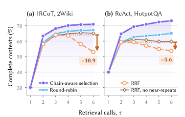
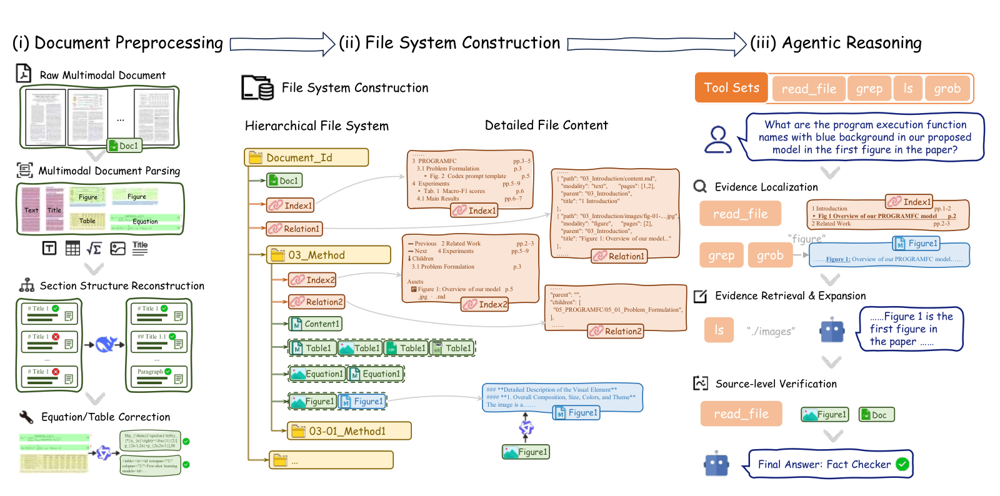
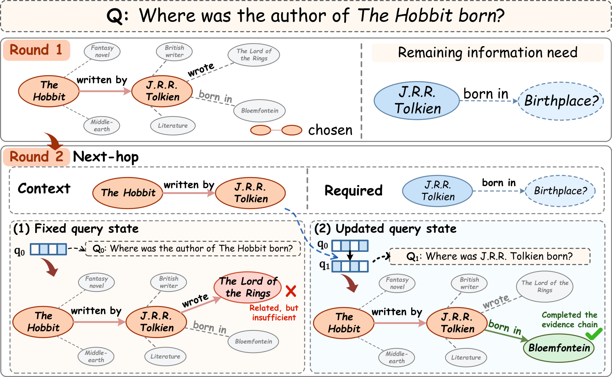
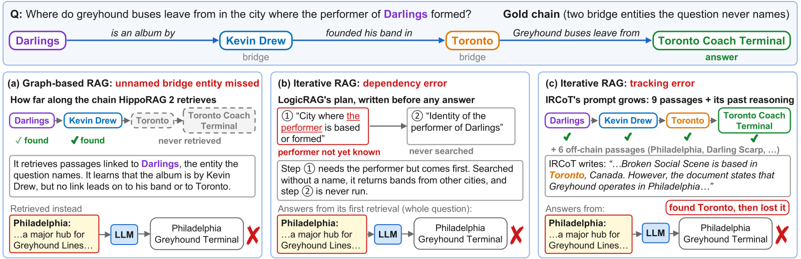
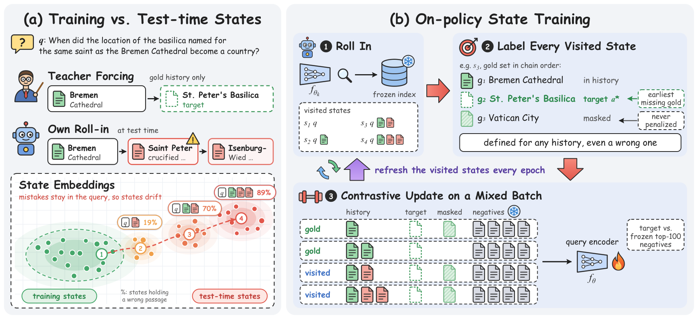

Contents · 6 sections
1The next hop is often already written on the page2More searches can leave the reader with less evidence3Walk-through: how this Nancy Lincoln question is rerouted4The two steps' gains are tied together5What this means for people who build search agents6LimitationsSHARE
You've already opened Nancy Lincoln's page, but the next hop searches Joseph Hanks: how DetouR follows the links already there
There is a multi-hop question: where is Nancy Lincoln's husband buried?
A search agent starts with the question itself and already has Nancy Lincoln's page. That page links to her husband, Thomas Lincoln. The agent does not follow the link. The next hop searches for Joseph Hanks, and Thomas Lincoln's page is never retrieved.
Tingwei Chen, Yunxiao Shi, Zhendong Chu, Zhiying Deng, Min Xu, and Qingsong Wen propose DetouR for this kind of problem. In multi-hop QA, the decisive page often is not named in the question, but sits behind a hyperlink on a page already retrieved. Existing search agents first infer what is still missing, then write a new query. IRCoT turns each reasoning sentence into the next query, ReAct switches between thinking and explicit search actions, and Search-R1 uses reinforcement learning to decide when and what to search. All of them can only reach objects the model can name. Graph-retrieval methods first use a large model to extract associations from the whole corpus offline, or train a retriever on one corpus's links, so construction and maintenance are expensive. Retrieved passages still have to be filtered before they reach the reader. Common relevance ranking and RRF (weighting a passage by its ranks across lists, so passages that appear more than once are more likely to stay) also tend to drop a linked page that was found only once and does not look like the question. DetouR is a plugin on top of an existing agent. It reuses the links already in the retrieval results. It turns near-duplicate queries into queries that target linked pages, then starts from pages named in the question and runs Personalized PageRank along the links among already retrieved pages (a random walk from chosen seeds that scores pages on the chain), so the full evidence chain stays in the reader's context. Neither step adds a search or a large-model call. Plugged into four agents with different search styles, on 1,500 questions per collection, average EM (the share of answers that match the gold answer exactly) rises by 4.0 points on 2Wiki and 1.4 points on HotpotQA. When the agent sees the rerouted results online and continues from there, the average gains are 3.9 and 1.4 points.
Plugged into an existing search agent, DetouR reuses the links already in the retrieval results, adds no extra searches or large-model calls, and improves multi-hop QA accuracy; it needs usable associations among pages, and the gain is small on open web search.

The next hop is often already written on the page
On HotpotQA, the associations are the hyperlinks in Wikipedia abstracts: 19.5M links among 5.23M abstracts. 2Wiki has no ready-made hyperlinks; an edge is added when one article's title appears in another article's text.
The authors use the same BM25 retriever, give each of two route types five follow-up searches, and let an oracle pick the five queries that bring back the most gold pages. The retriever stays the same; the only difference is how the next hop is chosen. Using only the original question, the agent reaches 66.6% of gold pages on HotpotQA and 61.2% on 2Wiki. Semantic routes raise arrival to 76.7% and 69.4%. Association routes reach 85.8% and 83.9%. Using both routes together gives the highest arrival, 91.1% and 88.1%. This shows the two routes do not find fully overlapping evidence; association routes fill in the hop that semantic search did not take.
Among gold pages the four agents never retrieved, 53% to 73% on HotpotQA and 39% to 78% on 2Wiki are linked from a page in the top three of one of their earlier result lists. The gap is often already on a page they have. The arrival rates above are an upper bound when an oracle chooses the route. To use this in practice, the system still has to decide which link to follow, without crowding out useful semantic queries.
More searches can leave the reader with less evidence
Evidence has to be retrieved first, then selected into the reader's context, before the reader can use it. The paper calls the former coverage and the latter retention. A complete context is one in which every gold page made it into the reader. The reader sees only 10 passages, and each search also returns 10, so the lists pile up and a final selection is required.
RRF adds a passage's ranks across lists: the closer to the top, and the more lists it appears in, the higher the score. A page found by an association route usually appears in only one call, and often does not match the question's wording, so it loses on both counts. After Thomas Lincoln has been retrieved, RRF can still cut him.
Near-duplicate queries make this worse: a query that is identical to an earlier one, or that, after stopwords are removed, shares at least 0.8 of the content-word union with one. Across the four agents, such queries are 28% of follow-up calls on 2Wiki and 22% on HotpotQA. Of the passages they bring back, 87% and 83% have already been seen, and they add almost no new gold pages, 0.01 on average; other calls add 0.20 and 0.11. Near-duplicate queries are almost repeating what has already been searched.
Under RRF, the share of complete contexts peaks after two or three calls, then falls. IRCoT drops 10.9 points on 2Wiki, and ReAct drops 5.6 points on HotpotQA. Round-robin, which merges by rotating ranks and keeps a repeated passage only once, is still rising under the same budget.

At the end of search, RRF drops gold pages that Round-robin had kept, on 18.6% of 2Wiki questions and 13.9% of HotpotQA questions. If the near-duplicate lists are removed before RRF, the drop almost disappears: 10.9 points become 0.3, and 5.6 points become 1.5. The drop comes from repeated searches meeting a merger that rewards repetition.
Can those wasted queries be sent instead along links already written on the pages?
Walk-through: how this Nancy Lincoln question is rerouted
The walk-through follows paper Figure 3, with a ReAct agent on this real 2Wiki question. The scores in the figure come from the paper; the two prior-term positions in the formula are illustrative, to show the scale.

Step 1. The first few searches already have Nancy Lincoln's page, which links to Thomas Lincoln. The agent does not map "husband" to this person, and goes after Joseph Hanks.
Step 2. The sixth query is "burial place of Joseph Hanks in Allerton Cemetery", flagged as a near-duplicate of the fifth. DetouR does not open an extra search; it only reroutes this call. It collects links on already found pages that have not been searched yet. Each candidate query is the linked page's title plus the first six content words of the original question.
Step 3. A lightweight LightGBM scorer scores each candidate. LightGBM is a gradient-boosted tree for ranking; here it is trained with LambdaRank to estimate how many new gold pages the route would still bring back. Scoring uses only features of the route, the original question, and the search history so far, 30 features in all, with no extra search and no large-model call. In the figure, Thomas Lincoln is +0.21, Abraham is −0.32, and Fatima is −0.44. Thomas Lincoln has the highest score, so within the same call budget the original near-duplicate query is replaced with a search for him.
Step 4. When search ends, 10 passages must be chosen from all the lists for the reader. The seed is Nancy Lincoln, who is named in the question. Personalized PageRank walks the links among already retrieved pages, then adds a Round-robin prior, giving the final score s(d) = p(d) + μ / (π(d) + 1). In the main experiments, μ = 0.2, and π(d) is the passage's 0-based position in the round-robin list. The colored scores in the figure are these s(d) values: Nancy Lincoln 0.64, Thomas Lincoln 0.42, Sarah Bush Lincoln 0.18, Joseph Hanks 0.10. Illustrative: in first place, the prior term is 0.2 / 1 = 0.2; in ninth place, it is only 0.2 / 9 ≈ 0.02. The link-based score can lift Thomas Lincoln, who appeared in only one list, into the top 10. RRF cuts him.
Rerouting alone adds only 0.8 EM points on average (2Wiki, 31.6 to 32.4) and 0.3 points (HotpotQA, 40.6 to 40.9). Pages found by rerouting usually appear in only one list, so they are easy to squeeze out at merge time. Turning on chain-aware context selection first raises the share of complete contexts on 2Wiki from 59.3% to 64.5%, and EM from 31.6 to 34.1. Turning on rerouting then adds another 1.5 EM points, to 35.6, and another 5.9 points of complete context, to 70.4%. Together, the two steps raise average EM across the four agents from 31.6 to 35.6 on 2Wiki and from 40.6 to 42.0 on HotpotQA, more than the 3.3 and 1.1 from adding the separate gains. Rerouting improves coverage; chain-aware selection improves retention; a page found in the first step needs the second step to reach the reader.
The two steps' gains are tied together
In the main experiments, each agent searches once with the original question, then at most five follow-up searches, each returning 10 passages. Agents run alone use Round-robin to merge context, because it keeps more gold pages than RRF. The reader is Qwen2.5-7B-Instruct, always given 10 passages. Of the four agents, the first three already appeared above; Plan is the authors' own control, which writes three sub-questions and two keyword queries in one call. Replay first records the queries and stopping points from a solo run; rerouting replaces only the flagged call, and later queries stay as recorded. In a live run, the agent can see the pages found by rerouting and decide the next step from them.
| Link rerouting | Chain-aware context selection | 2Wiki EM | HotpotQA EM |
|---|---|---|---|
| Off | Off | 31.6 | 40.6 |
| On | Off | 32.4 | 40.9 |
| Off | On | 34.1 | 41.4 |
| On | On | 35.6 | 42.0 |
This table is the average of the four agents in replay, the same numbers used in the walk-through above. By agent, every agent improves on both collections; across 16 comparisons in replay and live runs combined, the 95% confidence interval excludes zero in 13 of them. The average live-run gains are 3.9 points on 2Wiki and 1.4 on HotpotQA, at most 0.4 points from replay, with no average difference. If agents run alone also switch to RRF for merging, the gains become 5.5 and 2.4 points, because RRF is more likely to drop linked pages.
Simpler variants lose some of the gain. With no rerouting, or with a random link from the same candidate set, the drop is 1 to 1.5 points on 2Wiki and 0.4 to 0.6 on HotpotQA versus full DetouR. Scoring only by title match, with no trained scorer, shrinks the gap to 0.7 and 0.1 points. Would a larger model be better at picking the link? Re-ranking the scorer's top five routes with a cross-encoder of up to 0.6B parameters changes EM by at most 0.2 points. In about 80% of flagged queries, none of the candidate links would bring a new gold page. The first need is to follow a viable link; there is little room to fine-pick among the candidates.
The same pattern holds for context selection. Replacing the corpus links with "just promote pages named in the question," propagating by text similarity, or randomly rewiring the graph all lower complete-context rates; except for a tie in EM on HotpotQA under random rewiring, the other EM scores drop by 1 point. On 2Wiki, the no-model chain-aware selector sends a complete context on 64.5% of questions, above a 7B LLM judge (53.8%) and an 8B Qwen3-Reranker (57.9%); on HotpotQA it is 67.9%, comparable to the reranker's 68.1%. Those models score each passage by how much it looks like the question, so a second-hop page like Thomas Lincoln, which is not named in the question, gets a low score. Adding link propagation on top of the judge's ranking raises complete contexts on 2Wiki from 53.8% to 64.2%. The gap is on these unnamed pages: chain-aware selection keeps 97.8% of them, the reranker only 81.2%. In these experiments, link propagation improved evidence retention, especially the retention of pages not named in the question on 2Wiki.
What this means for people who build search agents
First count how many searches near-duplicate queries are wasting, then check whether the reader's 10 passages have squeezed out a linked page that appeared only once.
If a system is already searching back and forth on multi-hop questions, there is no need to change the agent first, or to build a graph offline first. The links already in the retrieval results can be attached as a plugin, with no extra searches or large-model calls. The scorer does not have to be large: a LightGBM is enough here, and a larger cross-encoder adds almost no EM. Large reading scorers grade passages by how much they look like the question; for a second-hop page that is not in the question, link propagation is better at keeping it.
Limitations
With chain-aware selection on and rerouting still off, reading errors account for 55% and 57% of the four agents' wrong answers on the two collections; pages lost to a retention failure are only 1.2% and 1.9%. A complete context also does not guarantee a correct answer: the reader is right on only 43.8% and 51.3% of complete contexts; even given only the gold pages, EM is only 48.8 and 57.3. Of coverage misses, only 39% on 2Wiki and 22% on HotpotQA have that page among the top five link targets of some flagged call; even if an oracle chose those routes, EM would rise by at most 3.1 and 2.8 points. The remaining room is therefore more in the reader than in finding or keeping one more page.
The near-duplicate rule can also flag a query that uses mostly the same words but asks about another fact. When Search-R1 is switched back to its original E5 retriever, near-duplicates are only 12%, 83% of 2Wiki contexts are already complete, and the EM gain is significant only on HotpotQA. 2Wiki edges are title co-occurrence: of 150 random edges, only 41% point to the intended entity; edges between two gold pages are 99% correct; all sampled edges into pages with in-degree above 1,000 were wrong, so the experiments drop these hub pages. Random edges are often wrong, but edges between gold pages are mostly usable.
How did this read for you?
Hoot made a note. Thanks for the feedback.
One tap, no sign-in; tap again to undo. Only anonymous counts are kept, never who you are.
Related papersMore from Paper Daily
 Retrieval · 2026-11-04MCTS-KBQA: Monte Carlo Tree Search with Information Gain Rewards for Knowledge Base Question AnsweringWhen an LLM uses MCTS to find answers step by step over a knowledge base, intermediate steps can be given useful scores without training a reward model and without simulating to the end. The method gives the query history up to that step to an open instruction model and computes the perplexity of that history with and without the original question attached. The more the perplexity drops once the…
Retrieval · 2026-11-04MCTS-KBQA: Monte Carlo Tree Search with Information Gain Rewards for Knowledge Base Question AnsweringWhen an LLM uses MCTS to find answers step by step over a knowledge base, intermediate steps can be given useful scores without training a reward model and without simulating to the end. The method gives the query history up to that step to an open instruction model and computes the perplexity of that history with and without the original question attached. The more the perplexity drops once the… Retrieval · 2026-11-13PCG-RAG: Progressive Compositional Grounding for Retrieval-Augmented Generation in Complex Web Question AnsweringComplex web QA often requires first working out who or what several clues describe, then looking up an attribute of it, and a common mistake is to treat a name as settled after only one clue matches. The paper's example is a London power station converted into an art museum: a system that settles on Battersea from London and power station alone retrieves an architect who actually belongs to a dif…
Retrieval · 2026-11-13PCG-RAG: Progressive Compositional Grounding for Retrieval-Augmented Generation in Complex Web Question AnsweringComplex web QA often requires first working out who or what several clues describe, then looking up an attribute of it, and a common mistake is to treat a name as settled after only one clue matches. The paper's example is a London power station converted into an art museum: a system that settles on Battersea from London and power station alone retrieves an architect who actually belongs to a dif…
Retrieval · 2026-11-12DocFS: File Systems as Agentic Reasoning Environments for Complex Multimodal Document Question AnsweringWhen a VLM agent answers questions over long documents that mix text, figures and tables, the hard part is often how the document is laid out for it, not the model. DocFS takes a plain route: it turns the document into a file system, with sections as nested directories and text, figures, tables and equations stored as separate files, plus index files and relation files that record which text goes…
Retrieval · 2026-11-05QueryFlow: Multi-Hop Graph Retrieval with Adaptive Query EvolutionThe paper builds a multi-hop graph retriever, QueryFlow, that revises the question as it searches. After each propagation layer, it condenses the context found so far into a summary vector, merges it into the question state, and uses the new state to steer how the next layer searches. Earlier graph retrievers such as GFM-RAG keep the original question as the condition throughout propagation. Yet…
Retrieval · 2026-11-02DeFT-RAG: Incrementally Decomposing Multi-Hop Questions into Self-Contained Sub-Questions with Reusable AnswersThe work that multi-hop question answering piles onto one LLM can be split up. In this paper's DeFT-RAG, the LLM writes one sub-question at a time that names every entity it asks about. A program records each sub-question and its answer in a QA table by fixed rules, and the LLM reads this table at the end to answer the original question. On MuSiQue, accuracy rises from the strongest baseline's 0.…
Retrieval · 2026-11-02Retrieving from Your Own Mistakes: On-Policy Training of Embedding Models for Multi-Hop Retrieval-Augmented GenerationChain embedding retrievers for multi-hop retrieval see different histories in training and in use, and this paper fixes that without adding any LLM call. At each step such a retriever joins the question with the passages found so far to look for the next one; in training its history holds only correct passages, but in use it often holds wrong passages it found itself. On four-hop MuSiQue question… Retrieval · 2026-11-18EchoSpec: Training Search Agents to Weigh Evidence Above EchoesIn real corpora, one claim is copied and paraphrased across many pages, while the primary source that settles a question often appears once. Search agents trained with reinforcement learning treat those echoes as if they were independent sources: eight paraphrased false-claim echoes overturn 58% to 73% of previously correct answers. EchoSpec first teaches the model to recover bridge entities past…
Retrieval · 2026-11-18EchoSpec: Training Search Agents to Weigh Evidence Above EchoesIn real corpora, one claim is copied and paraphrased across many pages, while the primary source that settles a question often appears once. Search agents trained with reinforcement learning treat those echoes as if they were independent sources: eight paraphrased false-claim echoes overturn 58% to 73% of previously correct answers. EchoSpec first teaches the model to recover bridge entities past…
Discussion
Add experiment details, reproduction notes or a different take. Requires a GitHub sign-in.
Loading the discussion…